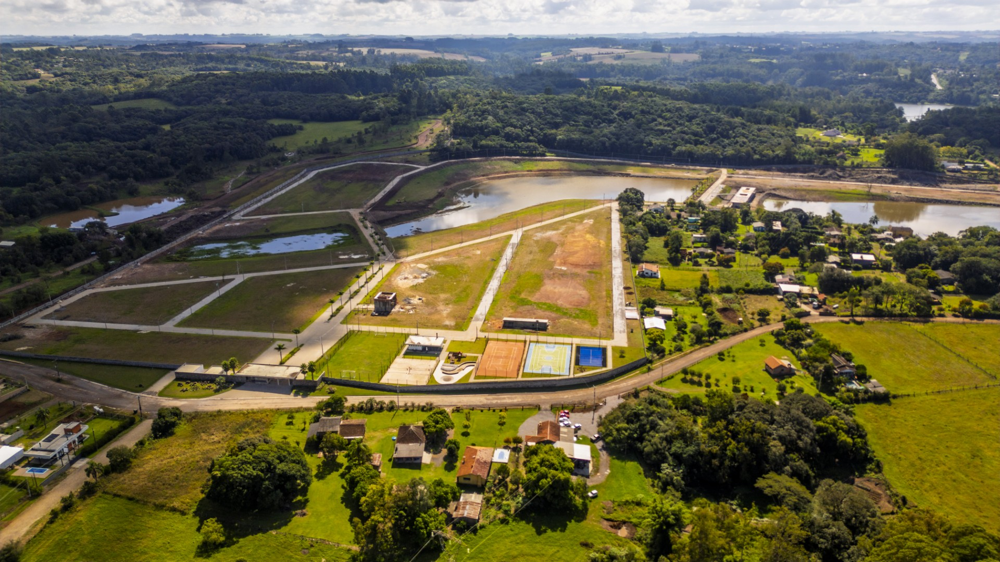
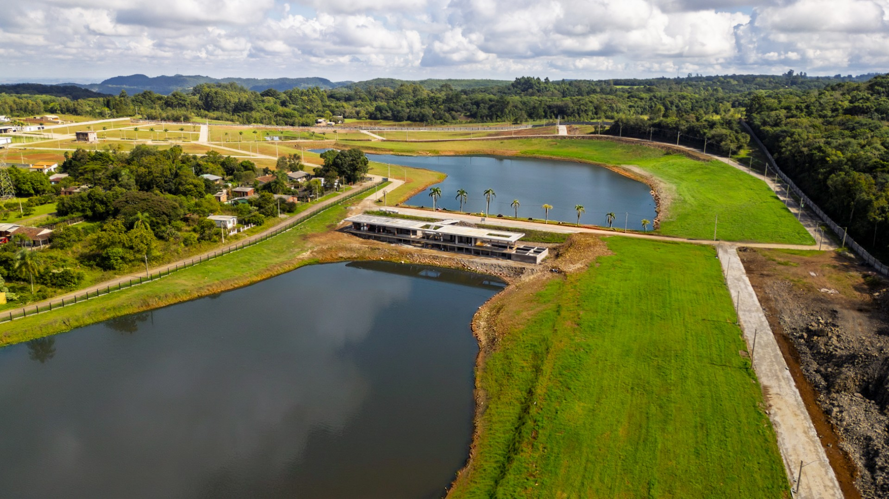
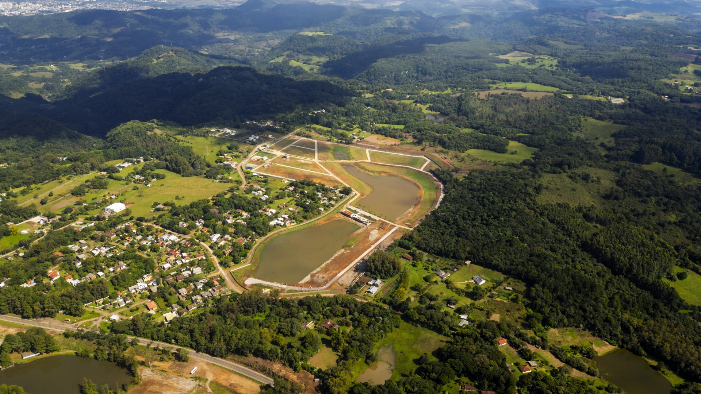
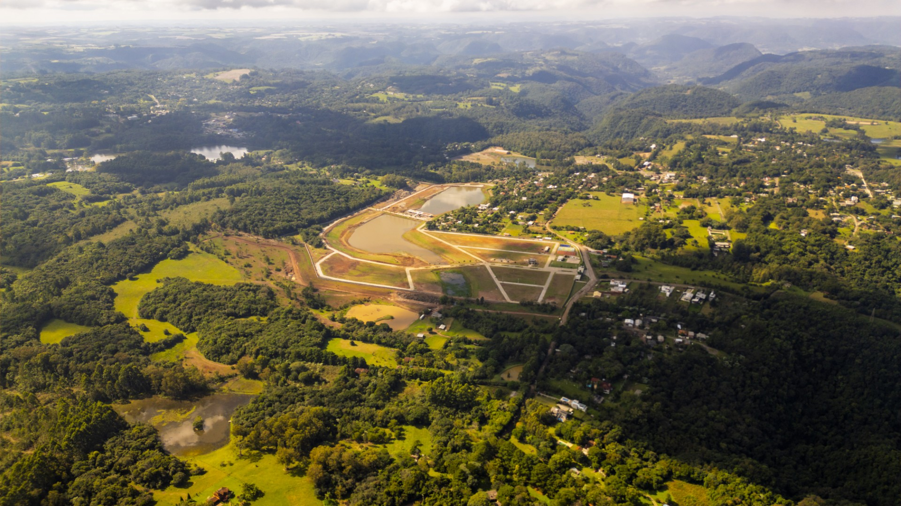

Últimos terrenos disponíveis
Condomínio fechado, seguro e pronto para receber o seu projeto.
Condomínio pronto em Itaara - RS
O condomínio está pronto, com a estrutura completa. Garanta o seu lote nas últimas unidades disponíveis.
O condomínio pronto
Quem passa pelo Itaara Reserve hoje já encontra tudo pronto. Toda a parte de ruas, iluminação e asfalto foi entregue. O lugar saiu do papel e virou realidade.
Como restam poucos terrenos à venda, essa é a hora certa para quem quer garantir o seu espaço aqui em Itaara. Você já pode visitar o local, caminhar pelas ruas e planejar a sua casa sabendo exatamente como tudo ficou, com total segurança.




Terrenos livres para obra
Os últimos lotes do Itaara Reserve são espaçosos, têm bastante quintal e garantem a privacidade da sua família. A estrutura do condomínio está toda pronta, com asfalto e demarcações no lugar.
Condomínio fechado, seguro e pronto para receber o seu projeto.
Asfalto e luz entregues para você começar a sua obra quando quiser.
Quintal, tranquilidade e privacidade para planejar uma casa com calma.
O estilo de vida de Itaara
Itaara se tornou o lugar perfeito para quem quer respirar ar puro, ter sossego e viver perto do verde, mas precisa continuar perto de Santa Maria para o dia a dia. A cidade está crescendo e atraindo pessoas que buscam mais qualidade de vida para a família.
Garantir um terreno no Itaara Reserve hoje significa ter o seu refúgio na serra em um condomínio pronto, seguro e muito bem localizado.
Lazer e natureza prática
O condomínio foi planejado para você aproveitar os momentos de lazer ao ar livre com a família, aproveitando o silêncio e o clima fresco da serra.
Lagos limpos para nadar, andar de caiaque ou relaxar na beira da água.
Caminhadas calmas no meio das árvores nativas e pequenas cachoeiras.
Espaços bem cuidados para descansar, praticar exercícios e curtir o dia.
Uma área cercada para o seu cachorro brincar e correr solto com segurança.
O que você encontra aqui
Asfalto, água e iluminação estão 100% concluídos. Sem surpresas ou obras pendentes.
Os lagos e as áreas verdes estão limpos e prontos para uso imediato.
Você mora no silêncio da serra e fica a poucos minutos de tudo o que precisa na cidade vizinha.
Como o condomínio ficou pronto, restam poucos terrenos disponíveis para venda.
Convite para visita
O Itaara Reserve está totalmente pronto. O melhor jeito de conhecer o lugar é vindo até aqui para caminhar pelas ruas, respirar o ar fresco da serra e ver os lagos de perto.
Agende um horário com a nossa equipe e venha sentir a tranquilidade do condomínio de perto.
Agendar uma visitaSe você sempre quis morar ou ter um refúgio em Itaara, com a segurança de um condomínio fechado e contato direto com a natureza, esse é o momento de agir.
Restam poucos lotes à venda. Deixe seus dados abaixo para receber as opções e valores dos últimos terrenos disponíveis antes que as vendas terminem.